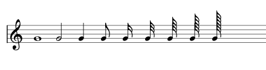

2.1. The Score element
In music, a music score is, basically, a collection of staves. When the score is intended to be performed by more than one person, each performer will usually have assigned one or more staves (a ‘score part’) with the music he/she has to perform. Each score part can be printed in a separate piece of sheet music, called a part, to play from. In short:
- The score is a collection of score parts.
- A score part is a set of staves for one instrument or performer.
In LDP the concept of ‘score part’ is named ‘instrument’ and a score is, basically, a collection of instruments and some optional information:
score ::= (scoreversion[defineStyle*] [title*] [pageLayout*] [systemLayout*] [option*] [parts]instrument+ )
The version element is just a number to indicate the LDP language version used to encode the score:
version ::= (vers string)
For example:
(score
(vers 2.0) //the score is encoded using LDP version 2.0
(instrument ...)
)
The optional parts element defines how the instruments are grouped for adding visual clues, such as:
- for grouping performers (i.e for grouping all string instruments)
- for sharing properties (i.e. common barlines)
parts ::= (partsinstrIds[group*] ) instrIds ::= (instrIds ID* ) group ::= (groupfirstInstrIdlastInstrId[name][abbrev][symbol] [joinBarlines] ) firstInstrId ::= ID lastInstrId ::= ID name ::= string abbrev ::= string symbol ::= (symbol {none | brace | bracket | line} ) joinBarlines ::= (joinBarlines {yes | no | mensurstrich } )
The instrIds element is just a list of all instruments ids in the score. The instrument IDs must
be listed in the same order in which they will be defined alter in the score.
Each group defines a set of one or more related instruments, sharing some visual properties: braces,
brackets, common barlines and additional printed names for the group. firstInstrId and lastInstrId
are just the IDs for the first and last instruments that will be part of the group (both inclusive). Notice that both
can refer to the same instrument and this can be used for adding additional names to the instrument or for adding
a brace or bracket to its staves. But this is not necessary for adding a brace to multi-staves instruments (i.e. piano)
as for multi-staves instruments their staves are automatically joined by a brace.
Element symbol refers to the symbol to be used for displaying
the group. Possible values are { none | brace | bracket }. If not
specified, ‘brace’ is assumed.
Element joinBarlines is for declaring that all the instruments in the
group must share the barlines. Possible values are { no | yes |
mensurstrich}. If not specified, ‘yes’ is assumed.
For example, the next LDP code is for a score with four parts: three voices (soprano, tenor and bass) and a piano part. The voices are grouped by a bracket and they will share all barlines. For the piano is not necessary to define and group as the two piano staves are automatically joined by a brace. For instance, the following code:
(score (vers 2.0)
(parts
(instrIds S1 T1 B1 P1)
(group S1 B1 (symbol bracket)(joinBarlines yes))
)
(instrument S1 (name "Soprano")(abbrev "S")(musicData))
(instrument T1 (name "Tenor")(abbrev "T")(musicData))
(instrument B1 (name "Bass")(abbrev "B")(musicData))
(instrument P1 (name "Piano")(abbrev "P")(staves 2)(musicData))
)
will be rendered as:

2.1.1. Score options
Global options are defined by using the option element:
option ::= (optoption_name[option_value] )
Depending on the option, its value must be an integer number, a float number or a boolean { yes | no | true | false }.
These options are intended to control different aspects of the score renderization process. Normally they should not be used. Most of these options were created for solving an ad hoc need. In future the could be removed and replaced by specific parameters, in the affected elements, for controlling appearance in score renderization.
Currently, the following options are available:
StaffLines.Hide
It is a boolean option for supressing drawing the staff lines. Default value is ‘false’.
Staff.DrawLeftBarline
It is a boolean option for removing the left barline that connect all staves in one system. Default value is ‘true’.
Staff.UpperLegerLines.Displacement
This option accepts an integer number, in tenths units. It specifies an increment (or decrement) in the distance between the fifth line and the first top ledger line. Default value is 0. This option was created as a trick for displaying an scale across two staves, for forcing the first ledger line to be placed between both staves, as in following example:
(score (vers 2.0) (opt Staff.UpperLegerLines.Displacement 15) (instrument (staves 2) (musicData (clef G p1) (clef F p2) (key C) (n c3 q p2) (n d3 q p2) (n e3 q p2) (n f3 q p2) (n g3 q p2) (n a3 q p2) (n b3 q p2) (n c4 q p2) (n d4 q p1) (n e4 q p1) (n f4 q p1) (n g4 q p1) (n a4 q p1) (n b4 q p1) (n c5 q p1) (barline end) )))

Appart of this very specific example, I cannot see other uses of this option.
StaffLines.Truncate
Staff lines truncation only can occur when system is not justified. Staff lines always run until right margin unless requesting truncation. Option “StaffLines.Truncate” defines the behaviour:
0 - never truncate. Staff lines will always run to right margin. 1 - truncate only if last object is barline of type final. 2 - truncate only if last object is barline (any type). 3 - truncate always after last object.
Option 1 is the default behaviour and it can be useful for score editors: staff lines will run always to right margin until a barline of type final is entered.
Option 3 truncates staff lines after last staff object. It can be useful for creating score samples (i.e. for ebooks).
Score.JustifyLastSystem
Justification of last system is controlled by option “Score.JustifyLastSystem”, accepting the following values:
0 - never justify last system 1 - justify it only if ends in barline of type final 2 - justify it only if ends in barline of any type 3 - justify it in any case
Option 1 is the default value, and is convenient for score editors as never justifies the last system as it is being written and emulates the behaviour of writing scores with pen and paper. Once the score is finished, the user should change to option 3.
Score.FillPageWithEmptyStaves
It is a boolean option for forcing to fill the rest of the page with empty systems, when the score does not fills the page. Default value is ‘false’. Using value ‘true’ in an empty score or an score with just empty instruments with clefs, key and time signatures is a convenient way of producing manuscript paper.
For example, the following LDP code:
(score (vers 2.0) (opt Score.FillPageWithEmptyStaves yes) (opt StaffLines.Truncate no) (instrument (musicData)) )
Will generate a blank page with staves (a manuscript paper page). It will be rendered as:

Score.Center
It is a boolean option for centering the score. It is oriented for snippet scores in eBooks. If the score has only one system and it takes less space than available paper width, this option allows to center the score. Default value is ‘false’.
For example:
(score (vers 2.0) (opt Score.Center yes) (instrument (musicData) (clef G) (n g4 w) (n g4 h) (n g4 q) )))
- Render.SpacingMethod
This option specifies the desired spacing between notes:
1 = fixed spacing 2 = proportional spacing
Default value is 2. Fixed spacing can be convenient in some cases, when preparing examples for text books, for instance for displaying different note values:
(score (vers 2.0) (opt Render.SpacingMethod 1) (instrument (musicData (clef G) (n g4 w) (n g4 h) (n g4 q) (n g4 e) (n g4 s) (n g4 t) (n g4 i) (n g4 o) (n g4 f) )))
Render.SpacingValue
When using fixed spacing (Render.SpacingMethod = 1), this option defines the amount of space between notes. It must be an integer number, in tenths. Default value is 35 tenths (3.5 lines).
Two additional options are used for controlling some parameters of the spacing algorithm, when proportional spacing is used. Normally you should not use these parameters:
- Render.SpacingFactor
- It is areal number, normally in the range 0.2 to 2.0. Default value is 0.547.
- Render.SpacingFopt
- It is areal number, normally in the range 0.7 to 4.0. Default value is 1.4.
Deprecated options
They are accepted but will be removed in future:
- StaffLines.StopAtFinalBarline
- This is a yes/no option. It is deprecated and you should use StaffLines.Truncate instead.
- Score.JustifyFinalBarline
- This is a yes/no option. It is deprecated and you should use Score.JustifyLastSystem instead.
2.1.2. Units for measurements
LDP uses two types of units: absolute units and relative units.
Relative units in LDP are named ‘tenths’ and they refer to one tenth of staff interline space. These units are relative, as a score can have staves of different sizes. So ‘tenths’ units can only be used to specify measurements referred to an staff. They have a great advantage as changing the staff size will preserve the relative positions of all objects.
LDP uses ‘tenths’ for all measures, except in those rare cases in which no staff can be used as reference. In particular, all page margins and page width and height must be in absolute units. Absolute units are real world units, such as millimeters or inches. LDP uses as absolute unit one cent of a millimeter. Absolute units are only used when relative units can not be used
2.1.3. Page layout
The pageLayout element allows to define paper attributes, such as paper size, margins,
orientation, etc.
Important
pageLayout options are ignored when the score is embedded in a LMD document,
When embedded, page layout options are controlled by the document settings.
pageLayout ::= (pageLayoutpageSizepageMarginspageOrientation) pageSize ::= (pageSize width height) pageMargins ::= (pageMargins left top right bottom binding) pageOrientation ::= { portrait | landscape }
All page margins and page width and height must be in absolute units (one cent of a millimeter). See Units for measurements. For instance, if intended page size DIN A4 (210mm X 297mm) the pageSize element will be:
(pageSize 21000 29700)
By default, if no pageLayout element is defined, it will be assumed DIN A4 page size; portrait orientation; 2cm for left, top and bottom margins and 1.5cm for right margin. No binding margin:
(pageLayout (pageSize 21000 29700)(pageMargins 2000 2000 1500 2000 0) portrait)
2.1.4. System layout
Layout options for systems are specified by one or more systemLayout elements:
systemLayout ::= (systemLayout { first | other } systemMargins )
systemMargins ::= (systemMargins leftMargin rightMargin systemDistance
topSystemDistance `)
leftMargin ::= tenths
rightMargin ::= tenths
systemDistance ::= tenths
topSystemDistance ::= tenths
The first parameter of systemLayout must be either “first” or “other”. Value “first” refers to the first system in the score. Usually, the first system requires special margins. Value “other” will apply to all other systems in the score.
System margins are relative to the page margins. Positive values indent the system and negative values reduce the page margin size. All margin values are always in tenths (see Units for measurements).
systemDistance is the vertical distance from the previous system. It is measured from the bottom line of the previous system to the top line of the current system. It is ignored for the first system on a page; for it the value of topSystemDistance will be used. The topSystemDistance value defines the distance between top page margin and top line of first system in the page.
When no system layout elements are defined the following will be assumed:
(systemLayout first (systemMargins 0 0 2000 1000)) //left: 0, right: 0, system distance: 2cm, top: 1cm
(systemLayout other (systemMargins 0 0 2000 1500)) //left: 0, right: 0, system distance: 2cm, top: 1.5cm
2.1.5. Score titles
Score titles are optional. In most cases, it is more powerfull and flexible to embed an score without titles in a document, and then define the titles using paragraphs, headings and all other elements available at document level. Nevertheless, defining titles at score level could be useful is some cases. For this, the title element is available:
title ::= (title string [style] [location])
Examples:
(title "Prelude" (style "Title"))
(title "Op. 28, No. 20" (style "Subtitle"))
(title "F. Chopin" (style "Composer")(dy 30))
The reference point for displaying the first title is the top-left corner of the score margins. This means that the base line of the first title will be the top margin line of the score and thus, will be above the margin (in following image the score margin is drawn in orange):
(score (vers 2.0)
(defineStyle "Big-red" (font "Times New Roman" 20pt bold)(color #FF0000))
(title "The title for this score" (style "Big-red"))
(instrument (musicData
(clef G)
(n c4 q)
(barline)
))
)

The reference point for positioning following title elements is previous the title reference point incremented by previous title height:
(score (vers 2.0)
(defineStyle "Big" (font "Times New Roman" 20pt bold))
(defineStyle "Medium" (font "Times New Roman" 16pt))
(title "The title for this score" (style "Big"))
(title "A subtitle" (style "Medium"))
(instrument (musicData
(clef G)
(n c4 q)
(barline)
))
)
The location element should be used for properly positioning the title at the desired location. The displacement indicated by the location element is measured in tenths, referred to first staff of first instrument:
(score (vers 2.0)
(defineStyle "Small-blue" (font "Times New Roman" 10pt italic)(color #0000FF))
(defineStyle "Medium-grey" (font "Bernard MT Condensed" 14pt bold)(color #606060))
(defineStyle "Big-red" (font "Times New Roman" 20pt bold)(color #FF0000))
(defineStyle "Style3" (font "Times New Roman" 12pt normal))
(title center "Title for this great opus" (style "Big-red")(dx 270)(dy 30))
(title center "Pianoworks Op.114, No.7" (style "Medium-grey")(dx 340)(dy 30))
(title right "Words: P.Copypaste" (style "Small-blue")(dy 70))
(title left "Music: G.H.MendItAll" (style "Medium-grey")(dx 747)(dy 55))
(title right "The famous artist" (style "Medium-grey")(dx 805)(dy 60))
(instrument (musicData
(clef G)
(n c4 q)
(barline)
))
)